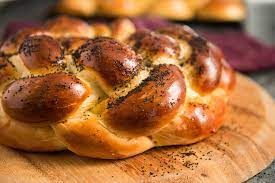

Challah

Description
This excellent challah recipe makes enough for two loaves - perfect for your Friday night Shabbat. If you don't want two loaves, freeze the dough for the second loaf until you need it. Just remember to give it plenty of time to defrost and rise when you're ready to use it.
Credit for this recipe belongs to the fantastic Joan Nathan. Check out her website to see more recipes and check out her awesome cookbooks!
Ingredients
- Active Dry Yeast - 3 1/2 tsp
- Sugar - 1/2 cup plus 1 tbsp
- Vegetable Oil - 1/2 cup plus extra to grease the bowl
- Eggs - 5 large
- Salt - 1 tbsp
- Flour, All-purpose - 8 to 8 1/2 cups
- Poppy or Sesame Seeds for sprinkling on top
Steps
- In a large bowl, dissolve the yeast and 1 tablespoon of sugar in 1 3/4 cups of lukewarm water.
- Whisk in the oil, then beat in 4 eggs (1 at a time) along with the remaining salt and sugar. Note: The mixing and the kneading can be done in a mixer with a dough hook.
- Gradually mix in the flour. When the dough holds together, it's ready for kneading.
- If kneading by hand, turn the dough out on a floured surface. By hand or by machine, knead the dough until smooth.
- Clean out the bowl, grease it, and return the dough to the bowl. Cover it with a clean, damp (not soaking wet) kitchen towel. Leave it in a warm place for 1 hour, until the dough has risen to almost double in size. You can use an oven that has been warmed to 150 degrees F and turned off.
- Punch the dough down after the first rise, cover it again, and let it rise in the warm place for another 30 minutes.
- Take half the dough and form it into 6 equal balls.
- Use your hands to roll each ball into a strand about 12 inches long and about 1 1/2 inches wide.
- Place the 6 in a row, parallel to each other. Pinch the top of the strands together.
- Start braiding the loaf by taking the outside right strand and moving it over 2 strands.
- Take the second strand from the left and move it to the far right.
- Take the outside left strand and move it over 2.
- Move second strand from the right over to the far left.
- Start over from the outside right strand. Keep doing this until all the strands are braided.
- If you're making a straight loaf, tuck ends undernearth. If you're making a circular loaf, twist it into a circle and pinch the ends together.
- Place the loaves on a greased cookie sheet with at least 2 inches between them.
- Beat the remaining egg and brush it on the loaves. At this point, you can freeze the breads to bake later or let them rise another hour if you're baking today.
- If baking immediately, preheat oven to 375 degrees F and brush the loaves again. If freezing, remove from the freezer 5 hours before baking and brushing.
- Dip your index finger in the egg wash, then into the poppy or sesame seeds. Brush your finger lightly over the loaf to decorate with seeds. Continue until the loaf is decorated.
- Bake in middle of oven for 35 to 40 minues, until golden brown. Cool loaves on a rack before enjoying.